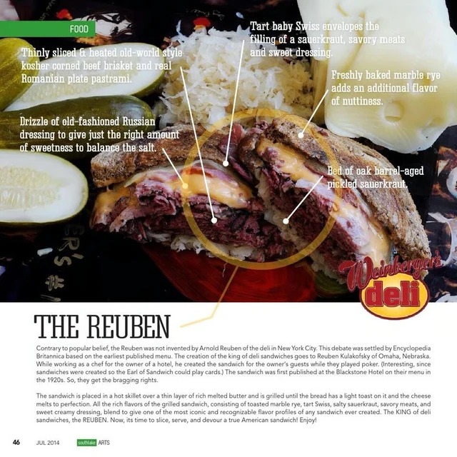
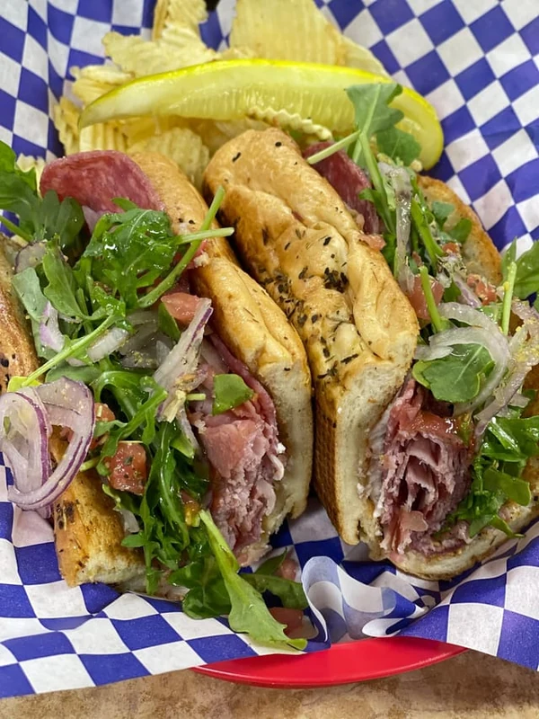
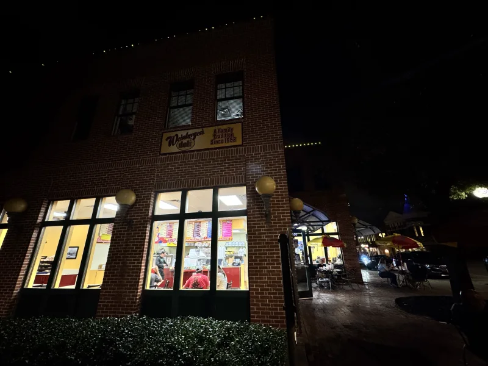

01 / CHICAGO CLASSIC
01 / CHICAGO CLASSICITALIAN BEEF
Wet or dry. Sweet, hot or mild peppers. Choose it the way you like it.
Choose your options ↗CHICAGO, 1952 / GRAPEVINE, 2002
MAIN STREET. GRAPEVINE, TEXAS.
Italian beef. Reubens. Chicago dogs.
A sandwich shop with a very long menu.

FROM THE DELI
Watch Weinberger’s own film: Italian beef, Chicago roots, and the deli on Main Street.
Find your Italian beef ↗A FEW PLACES TO START
01 / CHICAGO CLASSICWet or dry. Sweet, hot or mild peppers. Choose it the way you like it.
Choose your options ↗
02 / DELI COUNTERCorned beef and pastrami, Swiss, sauerkraut and Russian dressing on grilled marble rye.
Take a closer look ↗
03 / SOMETHING DIFFERENTProsciutto, sopressata, buffalo mozzarella and peach habanero jam on Italian herbed focaccia.
See every ingredient ↗1952 → 2002 → MAIN STREET
The Weinberger family started in Chicago in 1952. Dan opened the Grapevine deli in 2002. The menu grew with it: deli standards, Chicago staples, and sandwiches you won’t find on a short list.
Start with a sandwich, then make it yours. Bread, meats, cheese, toppings and toasted or not toasted—all together in one place.
COME BY THE DELI
Grapevine, Texas 76051
